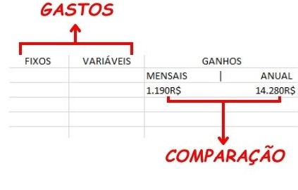

Defina um objetivo claro afinal querer ser rico todo mundo quer, mas isso é muito vago, precisamos ates de mais nada, definir um objetivo claro e direto.
Exemplo: não ficar preso a dividas ate o pescoço, paz financeira.
Agora, pra poder começar nessa busca pela paz financeira, vamos começar com a projeção, muitas pessoas possuem a mania de querer anotar os gastos mas isso não irá servir de nada se não sabermos administrar, pra isso monte essa tabela, considerando os seus gastos fixos os gastos variáveis e o seu ganho, e no ganho coloque o seu ganho mensal e anual, com isso ela fica assim:
Com essa tabela fica mais facil de separar dinheiro para investir, e para lazer, nos criamos um orçamento, evitando o gasto desenfreado. Agora pra controlar os gastos vamos fazer uma comparação direta, entre esses 2 primeiros parametros, e em seguida diminuir dos outros dois.
(Fixos + Variáveis) - (mensais) = TotalMensal
(Fixos + Variáveis) - (Anual) = TotalAnual
Pra gerar o valor anual total não podemos ter gastos, por isso subitraimos a relação dos gastos, teremos então acesso ao nosso total mensal e o total anual, e poderemos tomar uma providência com base nessas informações.
Por estar ganhando uma renda mais elevada que a naturalmente pensada, aparece aquela vontade de gastar mais do que o necessário.
E com isso, também surge um problema, mas não em nosso bolso, e sim em nosso cérebro, quando colocamos na cabeça que podemos gastar mais, temos a tendência a gastar usando como desculpa: "eu ganho mais, eu mereço" e sem perceber acabamos gastando o dobro ou ate mesmo o triplo do que nos recebemos, para evitar o uso desenfreado do nosso salário devemos fazer um orcamento relacionando o quanto podemos gastar e o quanto queremos.
É evidente que, já que estamos ganhando um buff em nosso salário, eventualmente as coisas que ja eatavam planejadas para o salário anterior também receberem um power up.
E para construir um orçamento é relativamente simples, basta você listar seus gastos que voce julga necessários, fora os qur ja são fixos ou seja lazer. Desaa forma é mais provável que seu aporte seja mais robusto ao fim do mês.